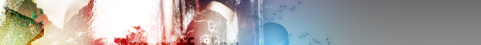
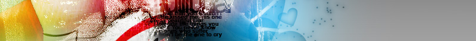

|  |
|  |
Main Contents Here
It's amazing isn't it? A non-ayumi layout. This one features Lee Hoyin (I hope I got that right). I'm quite proud of this one. I started out with a white background for this one if you can believe that.Anyway the thing that took the longest was the css. I wanted this layout to not be graphic intense and as clean as possible. I just love the colors in this one.
This layout was made in Photoshop cs2, using default tools with patterns and brushes that I made myself. It also uses some textures taken from olorfilter and Hybrid Genesis.
Usage
The only file you need to edit in this zip is index.html. In index.html, only the parts marked "Content" and "Navbar" should be edited, and nothing else. Please be aware that it relies heavily on cascading style sheets (css) so you follow the basic setup of this page and use it as the template for your other pages. Also don't forget to upload the stylesheet or your layout won't work properly.Here's some examples of the formatting available:
| Name: | |
| Email: | |
| Comments: | |
Terms of Use
Please read and follow the following guidelines. If you do not agree with these then feel free not to use this layout.About
Name: Chris (Kalli)Header
+ + Link + + Link + + Link + + Link + + LinkCredits
Designed by Chris of Lunaire.